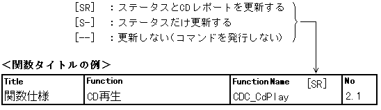

★PROGRAMMER'S GUIDE
★CD通信I/F(CDパート)
★PROGRAMMER'S GUIDE
★CD通信I/F(CDパート)

機能 | 関数名 | 番号 | |
|---|---|---|---|
CDブロック共通 | 1.0 | 現在のCDステータス情報の取得 | CDC_GetCurStat | 1.1 |
直前のCDステータス情報の取得 | CDC_GetLastStat | 1.2 | |
定期CDステータス情報の取得 | CDC_GetPeriStat | 1.3 | |
ハードウェア情報の取得 | CDC_GetHwInfo | 1.4 | |
TOC情報の取得 | CDC_TgetToc | 1.5 | |
セッション情報の取得 | CDC_GetSes | 1.6 | |
CDブロックの初期化 | CDC_CdInit | 1.7 | |
トレイのオープン | CDC_CdOpen | 1.8 | |
データ転送の準備待ち | CDC_DataReady | 1.9 | |
データ転送の終了 | CDC_DataEnd | 1.10 | |
機能 | 関数名 | 番号 | |
|---|---|---|---|
CDドライブ | 2.0 | ||
CD再生 | CDC_CdPlay | 2.1 | |
再生位置のシーク | CDC_CdSeek | 2.2 | |
スキャン再生 | CDC_CdScan | 2.3 | |
機能 | 関数名 | 番号 | |
|---|---|---|---|
サブコード | 3.0 | ||
サブコードQの取得 | CDC_TgetScdQch | 3.1 | |
サブコードR〜Wの取得 | CDC_TgetScdRwch | 3.2 | |
機能 | 関数名 | 番号 | |
|---|---|---|---|
CD-ROMデバイス | 4.0 | ||
CDデバイスの接続先の設定 | CDC_CdSetCon | 4.1 | |
CDデバイスの接続先の取得 | CDC_CdGetCon | 4.2 | |
最終リードセクタのバッファ区画の取得 | CDC_CdGetLastBuf | 4.3 | |
機能 | 関数名 | 番号 | |
|---|---|---|---|
セレクタ | 5.0 | ||
絞りフレームアドレス範囲の設定 | CDC_SetFiltRange | 5.1 | |
絞りフレームアドレス範囲の取得 | CDC_GetFiltRange | 5.2 | |
絞りサブヘッダ条件の設定 | CDC_SetFiltSubh | 5.3 | |
絞りサブヘッダ条件の取得 | CDC_GetFiltSubh | 5.4 | |
絞りモードの設定 | CDC_SetFiltMode | 5.5 | |
絞りモードの取得 | CDC_GetFiltMode | 5.6 | |
絞りの接続先の設定 | CDC_SetFiltCon | 5.7 | |
絞りの接続先の取得 | CDC_GetFiltCon | 5.8 | |
セレクタ（絞り、区画）のリセット | CDC_ResetSelector | 5.9 | |
機能 | 関数名 | 番号 | |
|---|---|---|---|
バッファ情報 | 6.0 | ||
CDバッファサイズの取得 | CDC_GetBufSiz | 6.1 | |
バッファ区画のセクタ数の取得 | CDC_GetSctNum | 6.2 | |
実データサイズの計算 | CDC_CalActSiz | 6.3 | |
実データサイズの取得 | CDC_GetActSiz | 6.4 | |
セクタ情報の取得 | CDC_GetSctInfo | 6.5 | |
フレームアドレス検索の実行 | CDC_ExeFadSearch | 6.6 | |
フレームアドレス検索結果の取得 | CDC_GetFadSearch | 6.7 | |
機能 | 関数名 | 番号 | |
|---|---|---|---|
バッファ入出力 | 7.0 | ||
セクタ長の設定 | CDC_SetSctLen | 7.1 | |
セクタデータの取り出し | CDC_GetSctData | 7.2 | |
セクタデータの消去 | CDC_DelSctData | 7.3 | |
セクタデータの取り出し消去 | CDC_GetdelSctData | 7.4 | |
セクタデータの書き込み | CDC_PutSctData | 7.5 | |
セクタデータの複写 | CDC_CopySctData | 7.6 | |
セクタデータの移動 | CDC_MoveSctData | 7.7 | |
セクタデータ複写／移動エラー取得 | CDC_GetCopyErr | 7.8 | |
機能 | 関数名 | 番号 | |
|---|---|---|---|
CDブロックファイルシステム | 8.0 | ||
ディレクトリの移動 | CDC_ChgDir | 8.1 | |
ファイル情報の保持 | CDC_ReadDir | 8.2 | |
保持ファイル情報範囲の取得 | CDC_GetFileScope | 8.3 | |
保持ファイル情報の取得 | CDC_TgetFileInfo | 8.4 | |
ファイルの読み込み | CDC_ReadFile | 8.5 | |
ファイルアクセスの中止 | CDC_AbortFile | 8.6 | |
機能 | 関数名 | 番号 | |
|---|---|---|---|
レジスタアクセス | 9.0 | ||
データ転送レジスタポインタの取得 | CDC_GetDataPtr | 9.1 | |
割り込み要因レジスタ値の取得 | CDC_GetHirqReq | 9.2 | |
割り込み要因レジスタのクリア | CDC_ClrHirqReq | 9.3 | |
割り込みマスクレジスタ値の取得 | CDC_GetHirqMsk | 9.4 | |
割り込みマスクレジスタの設定 | CDC_SetHirqMsk | 9.5 | |
MPEGレジスタポインタの取得 | CDC_GetMpegPtr | 9.6 | |
★PROGRAMMER'S GUIDE
★CD通信I/F(CDパート)